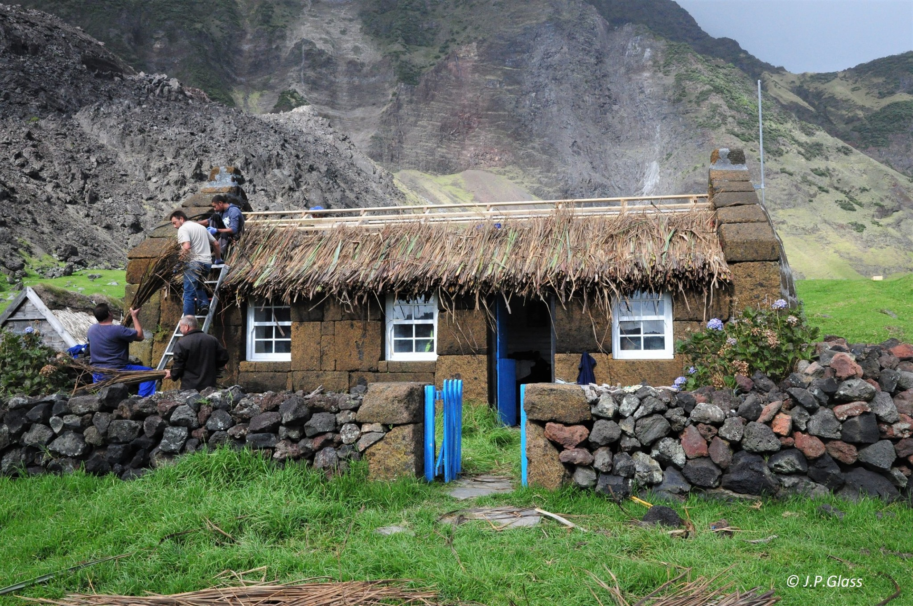

Our Faith is Our Strength

Geography
Edinburg of the Seven Seas - is the only settlement and the world's remotest inhabited locale.
t is placed at the island called Tristan da Cunha which is 2400 kilometers away from the closest country - South Africa.
The settlement encounters 250 permanent citizens - all of them are citizens of the British Overseas Territories.
Political system
This settlement is nothing like regular countries on the mainland, when it comes to the political system approach they have.
There's no political parties or trade unions: all authority is focused in King's hands, whilst there's also an Island Council.
The Island Council consists of 14 members: Administrator as President, 3 appointed and 8 elected. Elections take place every 3 years, usually occuring in February or March.


Flora and Fauna
Plants and animals throughout the island also appear across a wide area encompassing the Southern Atlantic along with the Southern Pacific.
A lot of people are coming to Tristan da Cunha for its wildlife. It's home for nearly 11 different bird species that includes penguins and albatrosses. Of course there's plenty of other animals like whales or seals.
Remoteness and isolation make it difficult for plants to colonize the isle, yet there's some plants those are native to this region and island in general e.g. Phylica arborea or Island Tree.
The 1961 volcano and volcanic park
The place located to the east of the settlement that is a reminder for the residents of the island about nature in all its beauty. It was naturally created after volcano eruption in 1961 during which all residents were evacuated to the Britain. After 2 years all Islanders came back to the island.
Thatched House
This building is a museum, newly built using volcanic rock thatched with the New Zealand flax - this is a traditional Tristan cottage. The museum preserves information and what's more important - a history. The history about Islanders endurance, resilience and strength, holding keepsakes and moreover - hope for the future.
